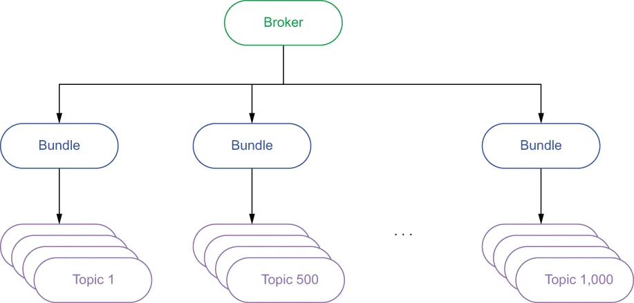
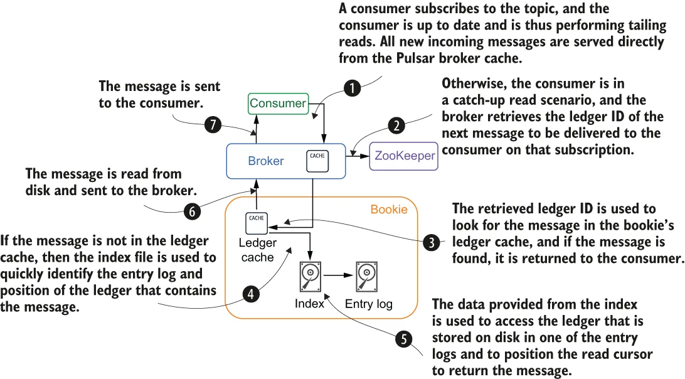

Pulsar’s multi-layered design ensures that message data is stored separately from the brokers, which guarantees that any broker can serve data from any topic at any time. This also allows the cluster to assign ownership of a topic to any broker in the cluster at any time, unlike other messaging systems that co-locate the broker and the topic data they are serving. Hence, we use the term “stateless” to describe the serving layer, since there is no information stored on the brokers themselves that is necessary to handle client requests.
Pulsar 的多层设计确保消息数据与 broker 分开存储，这保证了任何 broker 都可以在任何时刻为任何主题提供数据服务。这也使得集群可以在任何时刻把某个主题的归属权分配给集群中的任何 broker，而不像其他消息系统那样把 broker 与其所服务的主题数据放在一起。因此，我们用"无状态"这个词来描述服务层，因为 broker 自身并没有存储任何处理客户端请求所必需的信息。
The stateless nature of the brokers not only allows us to dynamically scale them up and down based on demand, but also makes them cluster-resilient to multiple broker failures. Lastly, Pulsar has an internal load-shedding mechanism that rebalances the load amongst all the active brokers based on the ever-changing message traffic.
broker 的无状态特性不仅使我们能够根据需求动态地扩缩容，还使集群对多个 broker 故障具有韧性。最后，Pulsar 还有一个内部的负载卸载（load shedding）机制，能够根据不断变化的消息流量，在所有活跃 broker 之间重新平衡负载。
Bundles
bundle
The assignment of a topic to a particular broker is done at what is referred to as the bundle level. All the topics in a Pulsar cluster are assigned to a specific bundle with each bundle assigned to a different broker, as shown in figure 2.3. This helps ensure that all topics in a namespace are evenly distributed across all the brokers.
把主题分配给某个特定 broker，是在所谓的 bundle 层级上完成的。Pulsar 集群中的所有主题都会被分配到某个特定的 bundle，而每个 bundle 又被分配给不同的 broker，如图 2.3 所示。这有助于确保一个命名空间中的所有主题都能均匀分布在所有 broker 上。

Figure 2.3 From a serving perspective, each broker is assigned a set of bundles that contain multiple topics. Bundle assignment is determined by hashing the topic name, which allows us to determine which bundle it belongs to without having to keep that information in ZooKeeper.
图 2.3 从服务角度看，每个 broker 被分配了一组包含多个主题的 bundle。bundle 的分配通过对主题名进行哈希来确定，这使我们能够判断某个主题属于哪个 bundle，而不必把该信息保存在 ZooKeeper 中。
The number of bundles created is controlled by the defaultNumberOfNamespaceBundles property inside the broker configuration file, which has a default value of 4. You can override this setting on a per-namespace level when you create the namespace by providing a different value when you create the namespace using the Pulsar admin API. In general, you want the number of bundles to be a multiple of the number of brokers to ensure that they are evenly distributed. For instance, if you have three brokers and four bundles, then one of the brokers will be assigned two of the bundles, while the others only get one each.
创建的 bundle 数量由 broker 配置文件中的 defaultNumberOfNamespaceBundles 属性控制，其默认值为 4。你可以在创建命名空间时，通过 Pulsar admin API 传入一个不同的值，在单个命名空间级别上覆盖该设置。一般来说，你会希望 bundle 的数量是 broker 数量的倍数，以确保它们被均匀分布。举例来说，如果你有三台 broker 和四个 bundle，那么其中一台 broker 会被分配到两个 bundle，而其余的每台各分到一个。
Load balancing
负载均衡
While the message traffic might initially be spread as evenly as possible across the active brokers, several factors can change over time, resulting in the load becoming unbalanced. Changes in the message traffic patterns might result in a broker serving several topics with heavy traffic, while others aren’t being utilized at all. When an existing bundle exceeds some preconfigured thresholds defined by the following properties in the broker configuration file, the bundle will be split into two new bundles with one of them being offloaded to a new broker:
虽然消息流量最初会尽可能均匀地分布在各个活跃 broker 上，但随着时间的推移，若干因素可能发生变化，导致负载变得不均衡。消息流量模式的变化可能造成某台 broker 服务于若干流量很大的主题，而其他 broker 则完全没有被利用。当某个现有 bundle 超过了 broker 配置文件中下列属性所定义的预配置阈值时，该 bundle 会被拆分成两个新的 bundle，其中一个会被卸载到一台新的 broker 上：
loadBalancerNamespaceBundleMaxTopics
loadBalancerNamespaceBundleMaxSessions
loadBalancerNamespaceBundleMaxMsgRate
loadBalancerNamespaceBundleMaxBandwidthMbytes
This mechanism identifies and corrects scenarios when some bundles are experiencing a heavier load than others by splitting these overloaded bundles in two. Then one of these bundles can be offloaded to a different broker in the cluster.
这一机制会识别出某些 bundle 比其他 bundle 负载更重的情形，并通过把这些过载的 bundle 一分为二来加以纠正。随后，其中一个 bundle 就可以被卸载到集群中的另一台 broker 上。
Load shedding
负载卸载
The Pulsar brokers have another mechanism to detect when a particular broker is overloaded, and automatically have it shed or offload some of its bundles to other brokers in the cluster. When a broker’s resource utilization exceeds the preconfigured threshold defined by the loadBalancerBrokerOverloadedThresholdPercentage property in the broker configuration file, the broker will offload one or more bundles to a new broker. This property defines the maximum percentage of the total available CPU, network capacity, or memory that the broker can consume. If any of these resources cross this threshold, then the offload is triggered.
Pulsar 的 broker 还有另一种机制，用于检测某台 broker 何时发生过载，并自动让它把一部分 bundle 卸载（shed / offload）到集群中的其他 broker 上。当某台 broker 的资源利用率超过了 broker 配置文件中 loadBalancerBrokerOverloadedThresholdPercentage 属性所定义的预配置阈值时，该 broker 就会把一个或多个 bundle 卸载到一台新的 broker 上。该属性定义了 broker 可以消耗的 CPU、网络容量或内存总量中所占的最大百分比。如果这些资源中的任何一个越过了该阈值，就会触发卸载。
The bundle selected is left intact and assigned to a different broker. This is because the load shedding process solves a different problem than the load balancing process does. With load balancing, we are correcting the distribution of the topics across the bundles because one of them has much more traffic than the others, and we are attempting to spread that load out across all the bundles.
被选中的 bundle 会保持完整不变，只是被分配给另一台 broker。这是因为负载卸载过程解决的问题与负载均衡过程不同。在负载均衡中，我们纠正的是主题在各个 bundle 之间的分布，因为其中一个 bundle 的流量远大于其他 bundle，而我们试图把这些负载摊平到所有 bundle 上。
Load shedding, on the other hand, corrects the distribution of the bundles across the brokers based on the number of resources required to service them. Even though each broker can be assigned the same number of bundles, the message traffic handled by each broker could be dramatically different if the load is unbalanced across the bundles.
而负载卸载纠正的则是 bundle 在各台 broker 之间的分布，依据是服务这些 bundle 所需的资源数量。即便每台 broker 被分配到的 bundle 数量相同，如果各个 bundle 上的负载不均衡，每台 broker 实际处理的消息流量也可能相差悬殊。
To illustrate this point, consider the scenario where there are 3 brokers and a total of 60 bundles with each broker serving 20 bundles each. Furthermore, 20 of the bundles are currently handling 90% of the total message traffic. Now, if most of these bundles happen to be assigned to the same broker, it could easily exhaust that broker’s CPU, network, and memory resources. Therefore, offloading some of these bundles to another broker will help alleviate the problem, whereas splitting the bundles themselves would only shed approximately half of the message traffic, while leaving 45% of it still on the original broker.
为了说明这一点，考虑这样一个场景：有 3 台 broker，总共 60 个 bundle，每台 broker 各服务 20 个 bundle。此外，其中 20 个 bundle 当前承载了总消息流量的 90%。此时，如果这些 bundle 中的大多数恰好被分配给了同一台 broker，它就很容易耗尽自己的 CPU、网络和内存资源。因此，把其中一些 bundle 卸载到另一台 broker 上会有助于缓解该问题；而如果去拆分这些 bundle 本身，则只能卸掉大约一半的消息流量，仍有 45% 留在原来的 broker 上。
Data access patterns
数据访问模式
There are generally three I/O patterns in a streaming system: writes, where new data is written to the system; tailing reads, where the consumer is reading the most recently published messages immediately after they have been published; and catch-up reads, where a consumer reads a large number of messages from the beginning of the topic in order to catch up, such as when a new consumer wants to access data beginning at a point much earlier than the latest message.
在流系统中通常存在三种 I/O 模式：写入（writes），即把新数据写入系统；追尾读（tailing reads），即消费者在消息刚发布后立即读取最新发布的消息；以及追赶读（catch-up reads），即消费者从主题开头读取大量消息以追赶进度，例如当一个新的消费者希望从远早于最新消息的位置开始访问数据时。
When a producer sends a message to Pulsar, it is immediately written to BookKeeper. Once BookKeeper acknowledges that the data was committed, the broker stores a copy of the message in its local cache before it acknowledges the message publication to the producer. This allows the broker to serve tailing read consumers directly from memory and avoid the latency associated with disk access.
当生产者向 Pulsar 发送消息时，消息会立即被写入 BookKeeper。一旦 BookKeeper 确认数据已提交，broker 会先把该消息的一份副本存入自己的本地缓存，然后才向生产者确认消息发布成功。这使得 broker 能够直接从内存中为追尾读的消费者提供服务，从而避免与磁盘访问相关的延迟。

Figure 2.4 Message consumption steps in Pulsar
图 2.4 Pulsar 中的消息消费步骤
It becomes more interesting when looking at catch-up reads, which access data from the storage layer. When a client consumes a message from Pulsar, the message will go through the steps shown in figure 2.4. The most common example of a catch-up read is when a consumer goes offline for an extended period and then starts consuming again, although any scenario in which a consumer is not directly served from the broker’s in-memory cache would be considered a catch-up read, such as topic reassignment to a new broker.
再看追赶读就更有意思了，它需要从存储层访问数据。当客户端从 Pulsar 消费消息时，该消息会经历图 2.4 所示的各个步骤。追赶读最常见的例子是：某个消费者离线了很长一段时间，然后重新开始消费；不过，任何消费者没有直接从 broker 的内存缓存中获得服务的场景，都可以被视为追赶读，例如主题被重新分配给一台新的 broker。